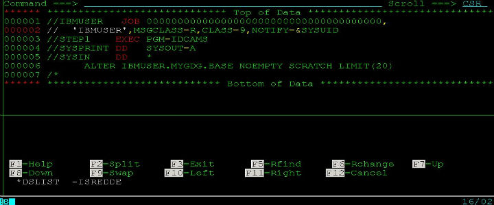

上篇文章我简单介绍了下大机平台上用到的一种叫做世代数据集(GDG)的文件，在这一篇里，我来比较详细地说明下GDG的用法和注意事项。
1、新建GDG base
一般我们可以用Job来新建一个GDG base，下面，我利用utility IDCAMS来生成一个名为IBMUSER.MYGDG.BASE并且可以有10个generation的GDG base。只要提交这个job马上就生成了GDG base了。

2、新建GDG generation
那么GDG base生成以后，如何生成一个generation呢，要怎么规定生成的generation的文件属性呢？这些都在你的Job里面做的，比如下面的JCL语句：
//EXTRACT DD DSN=IBMUSER.MYGDG.BASE(+1),
// DISP=(NEW,CATLG,DELETE),
// UNIT=SYSDA,
// SPACE=(CYL,(10,8)),
// DCB=(SYS1.MODEL,RECFM=FB,LRECL=125,DSORG=PS)
这样，就生成了一个IBMUSER.MYGDG.BASE.G0001V001的generation了。
3、引用已存在的GDG generation
这个要怎么引用呢，首先你要明白，括号()里面的数字是有意义的，如下：
//XXXXX DSN=IBMUSER.MYGDG.BAS(0) DISP=SHR //*使用当前最新的generation*//
//XXXXX DSN=IBMUSER.MYGDG.BAS(-1) DISP=SHR //*使用当前次新的generation*//
//XXXXX DSN=IBMUSER.MYGDG.BAS(-2) DISP=SHR //*使用当前第三新generation*//
//...
以此类推
4、查看GDG的属性
要查看GDG的属性，可以在GDG base的左边用命令
LISTC GDG ENT(/) ALL
回车，就会返回GDG的属性信息。比如什么时候建的，比如一共支持多少个generationden等。另一种方法是在ISPF；6 命令行里面输入:
LISTC GDG ENT('IBMUSER.MYGDG.BASE') ALL
来查询IBMUSER.MYGDG.BASE的属性信息。
5、删除GDG
对于一般的Dataset，我们在它前面打一个"D"就删掉了。但是GDG比较特殊，你必须至少输DEL才可以删掉。而且一定要记住顺序：先删除所有的generation，才可以允许你删除GDG base，否则会提示错误。
6、修改GDG属性
同样，要修改GDG的属性(如generation数目)，你仍然可以使用系统utiliti IDCAMS来修改，下图中，我用IDCAMS将IBMUSER.MYGDG.BASE的generation数量从原来的10个改到20个，只需提交job即可。 
7、注意事项
这里，说一点特别需要注意的地方。GDG是在一个JOB执行完毕之后才被CATALOG的。假如你需要在一个JOB当中有两次需要生成新的GDG generation，那么你必须一次用(+1)，一次用(+2)，不能两次都用(+1)，因为在你Job执行完之前，系统不知道你前面已经生成了一个新的generation的。
还有，比如在同一个job里面，你前面一个step用(+1)生成了一个新的generation，名字叫IBMUSER.TEST.GDG，后面某个step紧接着要使用这个新生成的generation，你觉得这时候你是使用DSN=IBMUSER.TEST.GDG(0),DISP=SHR呢还是使用DSN=IBMUSER.TEST.GDG(+1),DISP=SHR呢？ 告诉你，这种情况下你必须用后者，因为在这个Job执行完之前，系统并不知道你在前面的step已经生成了这个generation。也就是说，gdg的catalog是在job层面上的，不是在step层面上的。好了，关于GDG就介绍到这里。
Comments !